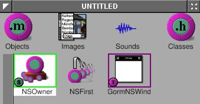

4.1 - The Basics#
Have you ever used a document-based application? I’d bet you have – document-based applications are one of the most common types of applications. Computers would be useless without them. Document-based applications are applications that interact with documents, such as text files, pictures, videos, and code. Web browsers are also document-based applications. In fact, document-based applications were invented long before computers – typewriters are essentially document-based applications, and you could argue that pen and paper are also document-based.
OpenStep, and therefore Cocoa and GNUstep, comes with built-in support for document-based applications in its Application Kit. This tutorial won’t cover everything you need to know about them – please read the Cocoa document about document-based applications. Otherwise, you probably will not know what I am doing.
Document-based apps look complicated at first – you have to deal with
NSDocumentController, NSWindowController, NSDocument and NSWindow.
However, since we’ll use Gorm to build the NSWindow, and
NSDocumentController and NSWindowController are not required to
subclass, NSDocument is the only class we have to deal with. That makes
everything very easy.
In this section, we only make the skeleton of the document-based application. We’ll add more features in the next part of this tutorial.
Skeleton user interface#
Now, we have to create the main user interface. Since it’ i’s a document-based application, there is no main window. We only need a menu so that users can open, save and close each document.
Open Gorm, choose “Document→New Application”. Click the window in the Gorm main window, use “Edit→Delete” to delete the window. Drag the menus “Info” and “Document” into the main menu. The main user interface will be like this:
Figure 4-32. Menu of document-based application

Note
Not having a main window can cause problems if you’re using a global or local menu bar, rather than a floating menu. Additionally, it’s not what users expect except on macOS. We’ll address these issues later.
Next, I need a NSDocumentController. Choose the class
NSDocumentController, and use menu item “Classes→Instantiate” to make an
instance.
Figure 4-33. Create instance of NSDocumentController
The main user interface is done. Save it as “Money.gorm”.
NSDocumentController will look at the property list of this application
in order to know what kind of document it should handle. Here is the property list we’ll be using:
MoneyInfo.plist
{
ApplicationDescription = "Money";
ApplicationIcon = "";
ApplicationName = Money;
ApplicationRelease = 0.1;
Authors = "";
Copyright = "Copyright (C) 200x by ...";
CopyrightDescription = "Released under...";
FullVersionID = 0.1;
URL = "";
NSTypes = (
{
NSName = "mon";
NSHumanReadableName = "Money Document";
NSUnixExtensions = ("mon");
NSRole = Editor;
NSDocumentClass = Document;
}
);
}
The important part is that NSTypes defines what kinds of documents our application, “Money”,
can handle, and what class (which should be a subclass of NSDocument) handles the document. In this case, Money.app edits “Money Documents” with file extension .mon, using the class Document, which we haven’t implemented yet. This is a simplified property
list, but it works. Look at InkInfo.plist from the Ink example application for a better example.
Now, we need to create the class Document, and
the window for each document. Open Gorm, choose “Document→New
Empty”. Drag a window out of the palettes. We won’t do anything in the window yet – we’ll flesh out the UI in the next section.
Look at the classes in the Gorm main window, and use “Classes→Create
Subclass” to create a subclass of NSDocument, called Document.
Figure 4-34. Create NSDocument subclass
Don’t instantiate it. Instead, we’ll make it the owner of the document
window (in Objects). Click the NSOwner in the Gorm main window, and select the Attributes pane in the inspector. Choose the Document class.
Figure 4-35. Set document as NSOwner of window


Now, the NSOwner is the class of Document. I need to connect the
_window outlet of NSOwner (an instance of Document) to the window,
Figure 4-36. Connect NSOwner to window


and the set the delegate of window to the NSOwner (an instance of Document).
Figure 4-37. Connect delegate to NSOwner


Finally, use “Classes→Create Class Files” to create the files of
class Document. Save them to Document.m and Document.h. Save the Gorm
file into “Document.gorm”.
Loading the user interface#
Now, we have five files: Money.gorm, MoneyInfo.plist, Document.h, Document.m and Document.gorm (which is actually a special kind of directory, called a “bundle”).
NSDocumentController knows what class to use because it is written in the
property list file. How does NSDocument (or its subclass, Document) know what the document viewer is? In this case, Money.app’s document viewer is Document.gorm. The simplest way to tell Document about Document.gorm is to implement the method
-windowNibName: in Document.
The Document files that Gorm created for us won’t work perfectly. Enter the following code instead:
Document.h:
#import <AppKit/AppKit.h>
#import <AppKit/NSDocument.h>
@interface Document : NSDocument
{
}
@end
Document.m:
#import "Document.h"
@implementation Document
- (NSString*) windowNibName {
return @"Document.gorm";
}
@end
I deleted the extra code inherited from NSDocument. Include
<AppKit/NSDocument.h> explicitly in the header file because <AppKit/AppKit.h doesn’t
include it (at least on some platforms). The most important part is that I return the name of the
document interface, Document.gorm, so that NSDocument can find where
the interface are.
Here are the rest of the files:
main.m:
#import <AppKit/AppKit.h>
int main(int argc, const char *argv[]) {
return NSApplicationMain(argc, argv);
}
GNUmakefile:
include $(GNUSTEP_MAKEFILES)/common.make
APP_NAME = Money
Money_HEADERS = Document.h
Money_OBJC_FILES = main.m \
Document.m
Money_RESOURCE_FILES = MoneyInfo.plist \
Money.gorm \
Document.gorm
Money_MAIN_MODEL_FILE = Money.gorm
include $(GNUSTEP_MAKEFILES)/application.make
Here is the source code: Money-src.tar.gz
Compile the application with make, and run it with openapp ./Money.app.
Once the application starts up, you will see only the menu. Use “Document→New” to open a new document. A empty window will show up. You can keep as many documents as you want. The menu items will be automatically enabled depending on the existance of the document. Most menu doesn’t work yet.
GNUstep offers a great framework for document-based applications. With GNUstep, we only need to focus on the document itself, and don’t need to worry about how to manage the multiple documents/windows. GNUstep will handle it perfectly.